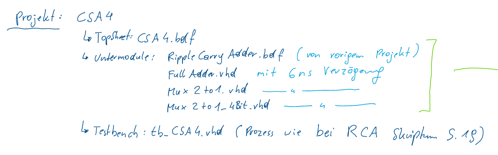

Zuerst wurde der Stoff der 2. Klasse wiederholt und ein Tafelbild des 4-Bit Carry Select Adder gezeichnet.
Danach wurde das Tafelbild in Onenote gestellt. Die Aufgabenstellung, die uns mündlich erklärt wurde, wurde auch in Onenote gestellt und diese sieht man in folgendem Bild.
